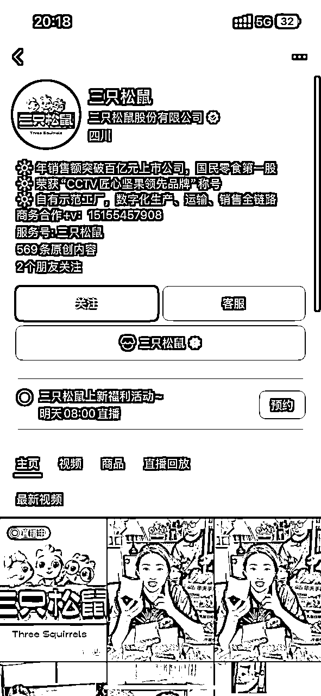

来源：https://zxk3s18ksh.feishu.cn/docx/FWsRdSgEyos6mqxC4b1cWRXCnVf
电商的本质就是流量*转化率*客单价，我从20年开始做抖音电商，最近这两年很明显可以感觉到，几乎所有品牌都面临流量和销售的瓶颈，在抖音已经很难有增量，这个时候寻找新的流量阵地就显得很有必要了。
腾讯的财报看到的数据，微信2025年Q1的月活有14.02亿，微信还是毋容置疑的中国第一大app，是一个超高用户基数、超高频，同时兼具社交关系链、统一账号体系、阅读习惯、支付习惯、购物习惯的成熟生态，能向 C 端用户提供丰富的社交、娱乐购物、支付场景；
之前跟某国际美妆品牌交流视频号直播业务，他们对视频号直播有个很谨慎的点，就是他们官方小程序商城一年有一个多亿的销售，一方面走自家小程序不会被抽点，另一方面，品牌不想把这一批用户数据给到平台，给了平台就意味着其他竞品可以触达到这批人，这是一个很有趣的品牌与平台的博弈。
按照平台传递出来的信息，接下来会要求所有小程序跟微信小店打通，从长远看，很有必要。
这也是一个有趣的信息点，大家可以发现，搜一搜是可以搜到商品的，这是一个货架电商场景，有没有价值？我相信很有价值！
我们在跟品牌方交流的时候，会发现有一个固化思维就是微信电商=做微信视频号直播，其实是一个很大的误区，这个也是平台不想看到的，这里说一个我们这些年经营沉淀下来的认知：
直播这个场域，天然适合非标品，标品不适合做商业化直播
大家可以发现，所有直播平台最开始都是从服装类目起来的，后面才慢慢的有很多标品进来，但是标品直播结合商业化，最后就是内卷，卷价格卷机制，终局就是大家都没有赚钱，钱全被平台赚了。微信肯定不想走这条老路。
这里我们引入微信创始人的一个思考：
“产品要像一个社会一样可以自己运作，因此需要建立一个系统并制定规则，让群体在系统中自我演化，能够自我演化才最重要。”一一张小龙《微信背后的产品观》
这也可以解释前几年，微信在电商路径的探索为什么这么拧巴，“普惠、平权、生态”是微信电商希望构建的底层逻辑，平台希望在这个过程里探索如何让“用户群体实现自我演化”。
包括微信小店现阶段的动作
礼物功能-推客联盟-全民小店
也是围绕这“普惠、平权、生态”这三个点来进行布局的，所以大家需要建立一个基础认知，不要用直播电商的理解去定义微信电商。
我们分几个维度看
抖音电商-流量内卷，需要付费工具拉量，目前抖音付费跟免费流量协同不够，没付费就没流量是很多商家面临的很大痛点，抖音是不存在私域的，在算法的干预下，就算有几百万粉丝，也是要给钱才能触达；
微信电商-结合商家私域渠道沉淀，有更多的免费流量协同，商业流量成本也较为便宜；
抖音电商-平台整体客单价在100元左右，除少数高奢及耐消品牌，较难有上探空间；
微信电商-平台目前商家以白牌为主，客单价区间在100-200左右，部分类目可以上探到300左右，品牌商家入场有更多高客单价空间；
抖音电商-触点较少，只有直播间跟短视频两个有效触点，目前没有私域价值；
微信电商-基于微信生态，包含了公众号、小程序、朋友圈、企业微信、私聊、群聊、搜一搜、视频号短视频、视频号直播、团长等多种不同触点；
有两个运营过程中发现的直观差异：
1、我们运营的一个快消品牌集团店，销售的卫生巾的人群画像，后台显示出来大部分是40+的新锐白领，肯定人群数据问题，这也是平台现在需要突破的，基建以及更丰富的用户数据，所以你很难把抖音的那一套搬过来用，场域不同很多东西都不一样了，只能多测试，我们前期测试也是卖了好几场零蛋过来了的；
2、一个头部奶企直播间，同样的产品我们在抖音也在卖，视频号这边我们发现很多静默下单，这些用户的画像确实比较大，也不怎么互动，默默看默默买，复购率也高，运营了几个月老客占比很高，这个跟抖音也是完全不同的，产品机制好了对销售肯定有影响，不过平销也能卖，不像抖音有那么强的价格敏感度；
微信平台，从店的维度、号的维度、直播间的维度，都很难看到垄断性的头部，这也是平台生态的优势，不会出现马太效应；
我们在做就知道，市面上所有第三方的平台，呈现的数据跟实际的数都是对不上的，不像抖音比较透明，竞品用的什么素材，直播间什么机制可以很快速的反应跟进；
很多ka都是还没开始正式入驻运营的，包括平台刚开放了保健品类目，早一步进入可以早一步吃到红利；
这个前面说了，有私域沉淀，可以更好的触达到老粉
跟抖音直播间只有一两个爆品不同，老客客单价高于新客，有更强的囤货心态
微信小店跟小程序服务号一样，都是平台的原子组件，而且是一个打通全平台不同渠道的原子组件
这个也是我们一直跟合作品牌传递的核心信息点，把视角从单一直播间的运营里拉出来，这里既有货架场也有内容场还有社交场，做短视频，做直播间，做社群，做团长合作，做线下引流，做送礼，做达播，做图文带货都可以，一开始做微信小店，不用全部做满，找到自己有优势的渠道先吃透，后面再根据实际情况做布局；
前面讲了这么多，总结一下，这是我理解的微信电商的价值
这是我理解的微信电商生态链
可以拆解成三个动作
商品通过搜一搜、内容推荐、公众号文章被10亿用户发现
用户点击商品后自动沉淀至社群、企业微信、个人号，提升后续复购率
推客带货、送礼物功能让每个用户都成为“移动分销节点”
优质短视频创作+矩阵分发，迅速建立品牌声量
优质爆款短视频引流直播间，24年8月开店至今微信小店GMV突破1亿
陪伴式直播风格，全年销售超5000w，DSR4.81，同比增长4倍
2024年持续增长，50+经销商矩阵，直播内容多样化，发布会、溯源等

微信小店全年销售额2亿+，同比提升100%
•线下矩阵开播：线上线下深度融合，联合各地门店开展10大区域账号共55个直播间；
•导购门店联动：联合线下400家门店以及1500名客户经理的私域力量，通过VIP归属合理界定业绩归属；
•微信圈生态打通：基于微信生态圈，精准高效链接顾客，适配当下消费者线上购物的习惯趋势，更有温度的服务好顾客，实现高密度、高效率的销售转化。

联盟带货共建矩阵达人，24年同比23年增长500%
•带货矩阵；借助团长带货铺开品牌商务团队，触达广大腰尾部达人，覆盖近5000个小矩阵号账号日常开播；
•达人爆品：面向不同带货达人匹配差异货盘，尾部小达人匹配9.9元-19.9元品牌爆款单品如「水牛乳千层吐司」等；头部达人钟丽缇，搭配「高端大满坚果系列」快速铺开松鼠产品线，24年松鼠同比23年增长500%+，成为坚果零食类Top1品牌商家；
•定制组货：目标人群更爱吃「健康、配料干净」的零嘴，主打高端+质价比+适合微信场景的168全坚果礼盒组合、850松子、A160腰果等；
服务号图文内容，品牌获客拉新，配合直播预约，实现预约观看转化率45%+
•营销功能；服务号「限时活动」发表功能进行图文带货，单条图文单天浏览量破5w+，单笔记单天累计成交2.1w元；
•服务号预约；通过服务号图文预约，直播间人群更加精准，加持高客单价鲜花出单；单场预约人数近3000人，预约观看转化率45%+，GPM达万元；
•获客拉新：通过服务号图文带货内容，利用AI技术叠加对用户的理解，产出多篇10万+，最高30万+的阅读内容，80%为微信小店下单用户
实现推客单期专场200w+，推客贡献占比65%，ROI 4.57
•选品组货：选择适合节日特点货盘搭建，配合高复购、日常消耗商品-鲜奶新年礼盒、0蔗糖酸奶礼盒等；选品价格优势保障，全网可比价；
•明确机制：选取优质推客机构，配合推客专用券玩法，实现推客单期大场达成；
以上就是我作为一个抖音代运营服务商，带着品牌方入局微信电商的一些思考，很多地方因为涉及到客户项目信息的，没有做细项的展开，权当是一个平台基础信息的分享，给大家敲开一条小缝，希望能够有一些信息可以帮到圈友们。